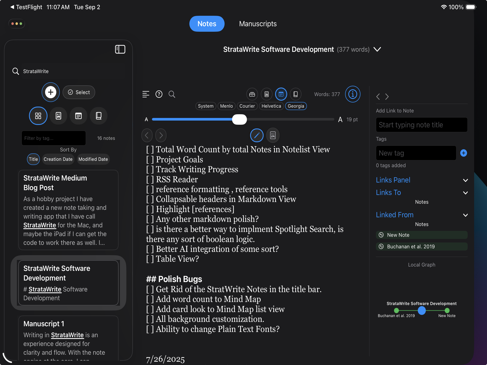
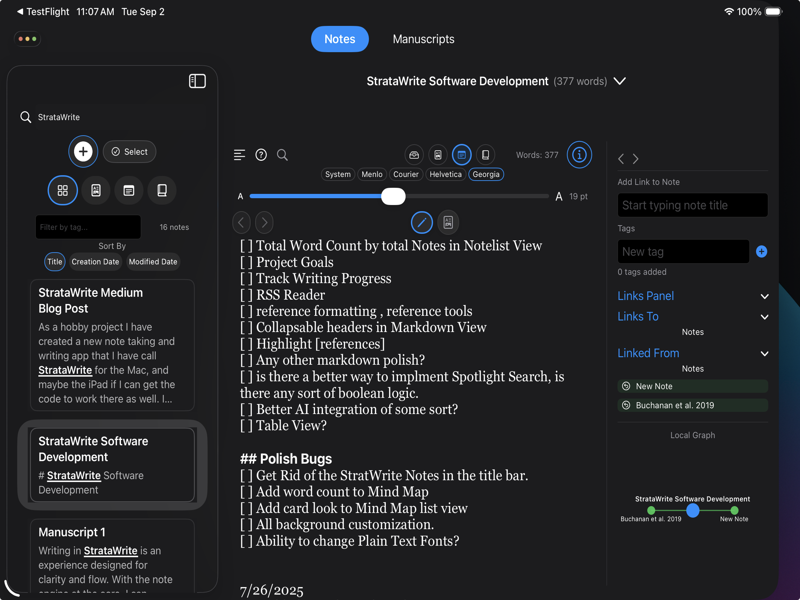

StrataWrite
A research‑first writing app for macOS and iPadOS. Clean drafting, daily word‑count goals, and reliable exports.
Quick Start
Platforms: macOS & iPadOS.
Best for: long‑form writing with clean typography, daily word‑count goals, and manuscript tracking.
Data: Your notes and manuscripts are saved locally on your device; export options include Markdown and plain text.
Contact: stance@mac.com
Response time: typically within 1–2 business days.
Version history: See release notes in the App Store listing.
Why StrataWrite
Focused drafting: A clean editor designed for long‑form writing and revision without visual noise.
Daily momentum: Built‑in word‑count goals with lightweight progress tracking to keep projects moving.
Straightforward exports: Get your work out cleanly as Markdown (.md) or plain text (.txt).
macOS + iPadOS: Native performance and familiar interactions across your devices.
Local first: Your manuscripts stay on your device; optional iCloud sync is managed by Apple.
Simple by design: Essentials for research writing, without excess configuration.
Screenshots
 


Troubleshooting
The site shows a 404 or old content.
Try a hard refresh (⌘‑Shift‑R on macOS) or clear the browser cache. If the issue persists, email support with your browser version.
I can’t find my manuscripts after updating.
Use Search in the app. If you still don’t see expected files, please email support with your device model and OS version.
Export to Markdown/plain text isn’t working.
Confirm you have write permission in the destination folder and sufficient disk space. If it fails repeatedly, send steps to reproduce.
FAQs
How do I set a daily word‑count goal?
Open a manuscript, then use the inspector panel’s Goal & Progress section to set a target and deadline.
Does StrataWrite support references and citations?
StrataWrite focuses on writing clarity. Advanced reference workflows are discussed in our documentation and may evolve over time.
What’s the best way to report a bug?
Email stance@mac.com with your app version, OS version, device, and a short screen recording if possible.